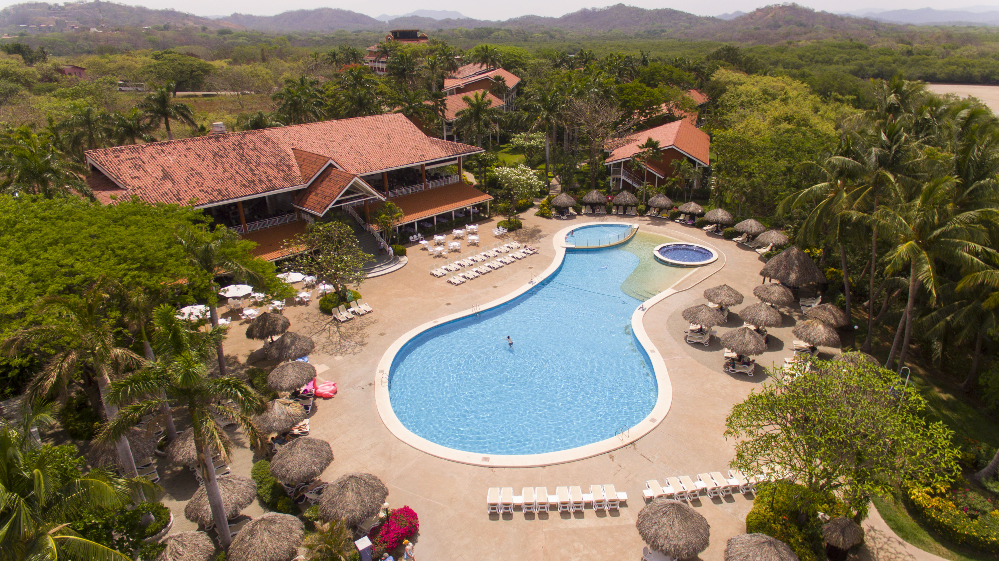
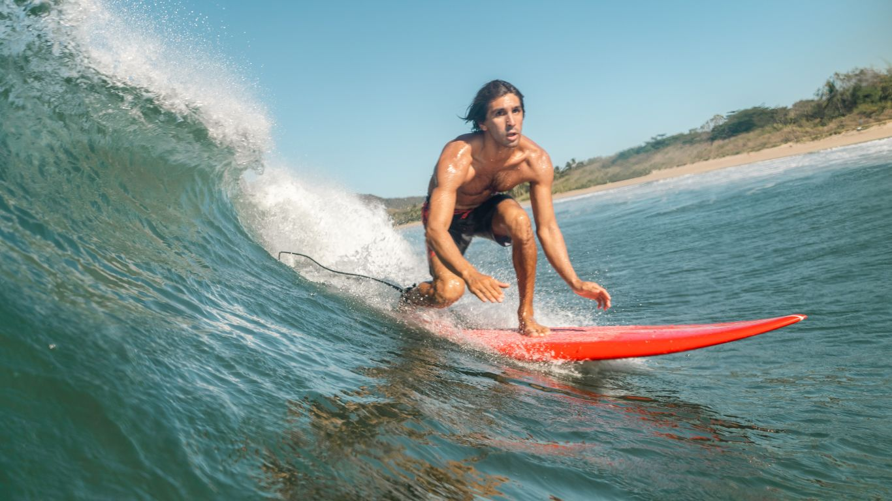
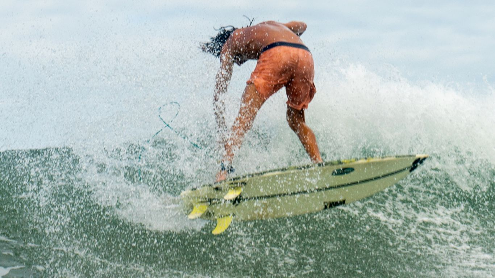
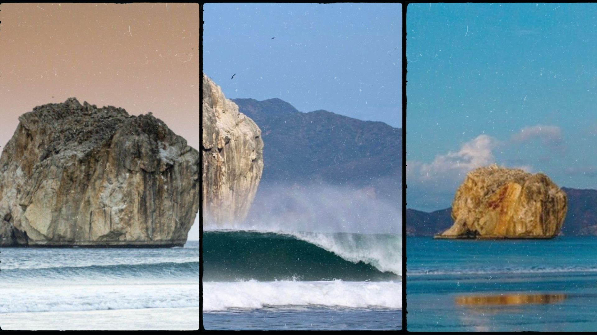
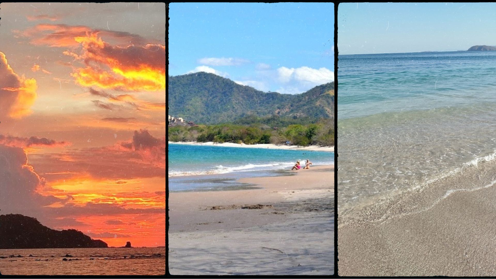
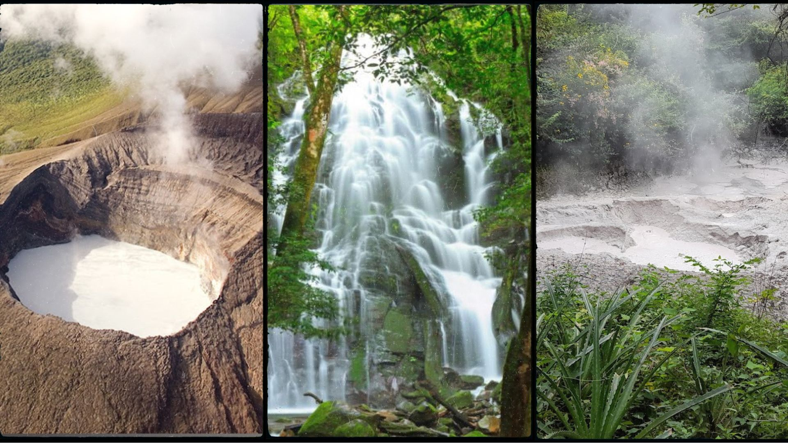
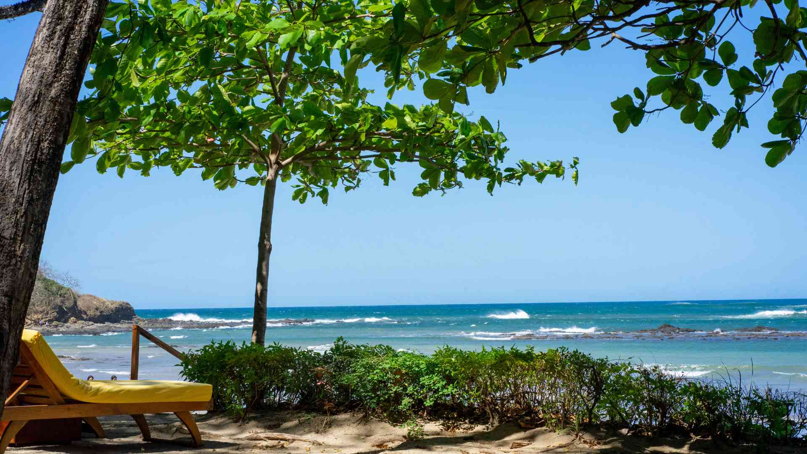

SURF · BIENESTAR · EXPERIENCIAS
La próxima sesión empieza acá.
Elegí una experiencia, conocé todos los detalles y armá una solicitud a tu medida. WavePoint la ordena y la consulta con el encargado local.
Explorar los 10 servicios ↓HECHO EN TAMARINDO
Encontrá tu forma de entrar al agua — o de bajar el ritmo.
Descubrí nuestra selección de servicios y experiencias en Tamarindo. Trabajamos con instructores y fotógrafos locales de confianza.
Cada tarjeta abre una página con fotos, información y un formulario interactivo para preparar tu consulta por WhatsApp.

Stay & experience
Choose your accommodation and add experiences to your stay.
Ver servicio y armar solicitud ↗
Surf lessons
Your first wave or your next step. Find a lesson that fits your level.
Ver servicio y armar solicitud ↗
Surf coaching
Work on your surfing with coaching and optional photos or video analysis.
Ver servicio y armar solicitud ↗
Yoga
Tell us your experience and preferred time to find a suitable session.
Ver servicio y armar solicitud ↗
Witch’s Rock surf trip
Request a guided surf trip with details matched to your group and the conditions.
Ver servicio y armar solicitud ↗
Snorkeling & catamaran
Compare boat experiences, snorkeling options and time on the coast.
Ver servicio y armar solicitud ↗
Diving
Discover Tamarindo underwater with a local diving experience.
Ver servicio y armar solicitud ↗
ATV tours
Check tour details and the operator’s participation requirements.
Ver servicio y armar solicitud ↗
Build your own experience
Combine the activities that fit your trip and create your own experience.
Ver servicio y armar solicitud ↗
Retreats
Explore hosted group trips with a planned program and stay.
Ver servicio y armar solicitud ↗